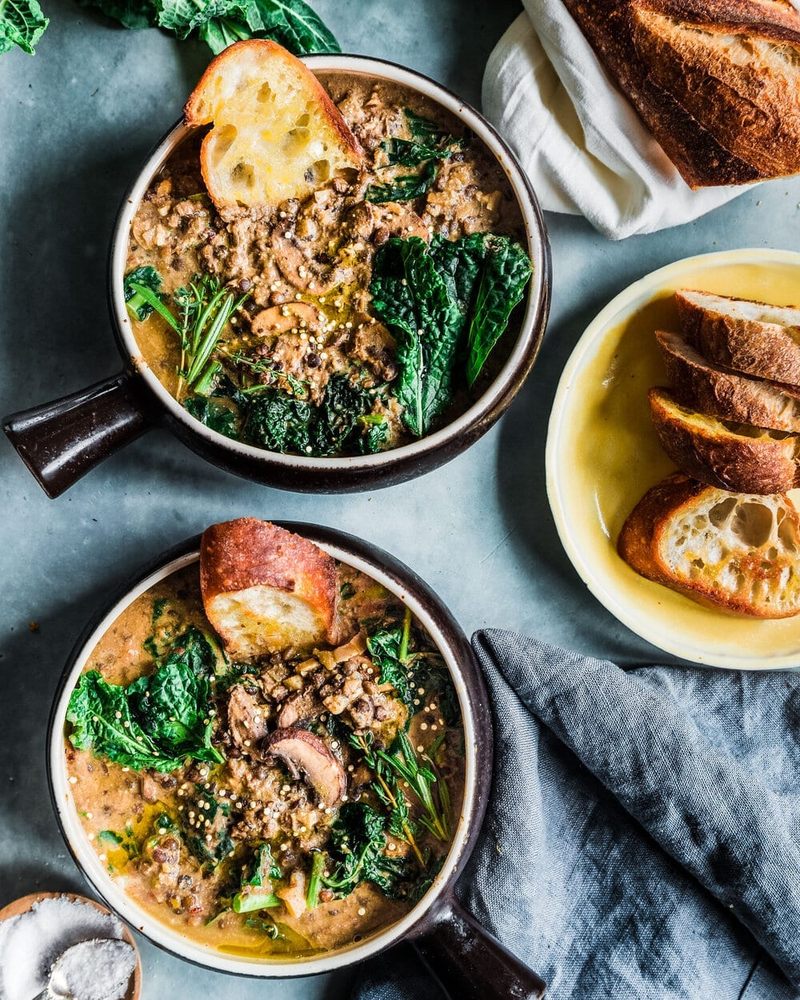

Creamy Mushroom and Black Beluga Lentil Stew

Description
This Creamy Mushroom and Black Beluga Lentil Stew is vegan, gluten-free, and plant-forward, but creamy and delicious. With hearty black beluga lentils, umami-packed mushrooms, and nutrition superstar kale, this is comfort food you can feel good about!
Ingredients
- 1 cup (~200g) black beluga lentils (can substitute French green lentils)
- 1 3/4 cups (420mL) low-sodium vegetable broth or water (2 cups (or 480mL) if cooking lentils on stovetop)
- 6 sprigs of fresh thyme
- 1 spring of fresh rosemary
- 1 bay leaf
- 1/2 teaspoon kosher salt (1/4 teaspoon if cooking lentils on stovetop)
- 8 whole black peppercorns
- 2 tablespoons olive oil (you can use less if you’re using a nonstick pan)
- 1 yellow onion diced
- 6 cloves garlic minced
- 16 ounces (~450g) cremini mushrooms, sliced
- 4 ounces (~110g) shiitake mushrooms (caps only), sliced
- Kosher salt and black pepper to taste
- 1 tablespoon fresh thyme leaves
- 1/2 teaspoon crushed red pepper flakes
- 1/4 cup (60mL) dry white wine (such as Pinot Grigio or Sauvignon Blanc)
- 1 ½ tablespoons white or yellow miso paste
- 3 tablespoons good-quality tahini
- 1 ½ tablespoons reduced-sodium tamari (gluten-free soy sauce)
- 2 cups (480mL) low-sodium vegetable broth
- 1/2 cup (120mL) “lite” coconut milk or unsweetened oat milk, cashew milk, or soy milk
- 1 head of Tuscan lacinato kale, tough midribs removed and leaves sliced
- 1-2 teaspoons good-quality balsamic vinegar
Steps
- Sift through the lentils to remove any debris or pebbles. Then place them in a fine-mesh sieve and rinse under cold water until the water runs clear.
- To make the lentils in the Instant Pot, combine all of the Lentils ingredients in the inner pot and stir to combine. Select the Pressure Cook setting (or Manual setting, depending on your model) at high pressure for a cook time of 6 minutes. Allow a natural pressure release.
- To make the lentils on the stovetop, add the lentils to a large saucepan or Dutch oven and add the 2 cups of vegetable broth or water. Add the remaining ingredients (thyme, rosemary, bay leaf, 1/4 teaspoon salt, and black peppercorns). Bring the water a boil over high heat, then reduce the heat to medium and add a pinch of salt. Simmer the lentils for 20-25 minutes until just tender.
- While the lentils are cooking, prepare the ingredients for the mushroom stew (chop the vegetables, measure out the ingredients, etc.).
-
To make the mushroom stew, heat a Dutch oven or large soup pot over medium heat and add the olive oil. Once the oil is shimmering, add the onion and cook until lightly browned, about 5-7 minutes, stirring frequently.
-
Add the sliced cremini and shiitake mushrooms and let them sit undisturbed for 3 minutes to allow them to brown. Then stir the mushrooms, and add a generous amount of kosher salt and pepper. Add the garlic, thyme leaves, and crushed red pepper flakes, and stir to combine until the mixture is fragrant, about 1-2 minutes.
-
Pour in the white wine and deglaze the pan for 2-3 minutes, scraping up any browned bits as needed. Then add the miso paste, tahini, and tamari and stir into the mushrooms to coat them. Add the cooked and drained lentils, 2 cups vegetable broth, and lite coconut milk. Stir well, and bring the stew to a boil.
-
Once the stew is boiling, carefully pour half of it into a stand blender. Blend until the mixture is completely pureed and smooth, and then pour the mixture back into the pot and stir to combine. Alternatively, use an immersion blender directly in the pot to partially blend the stew.
-
Once the stew has been blended, add in the sliced kale. Bring the stew to a boil until it is thick and creamy and the kale has wilted. Stir in the balsamic vinegar. Taste for seasonings and adjust accordingly.